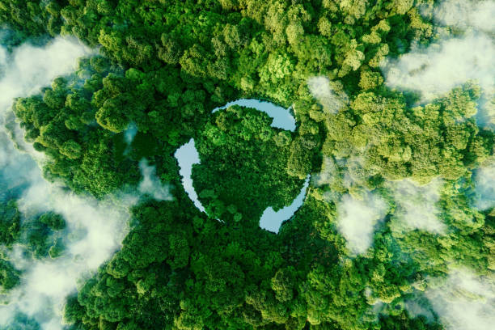

La ecología se estudia a través de seis escalas o niveles de organización de los individuos, que van de lo micro a lo macro y viceversa. Estos niveles son:
- Individuo: es el nivel más simple, en el que se considera a un solo organismo con el medio en el que lo rodea.
- Población: en este nivel se considera a todos los organismos de una especie que habitan en un área determinada.
- Comunidad: son todas las especies que habitan en un área determinada.
- Ecosistema: se consideran todos los organismos bióticos y abióticos de un área determinada.
- Biosfera: es el nivel más amplio, se toma en cuenta toda la vida en la Tierra.
- Bioma: conjunto de ecosistemas con características similares en cuanto a clima, vegetación y fauna.
Objetivos de la Ecología:
- Comprender los procesos de vida a través de las interacciones y adaptaciones de los seres vivos con su entorno.
- Explicar el desarrollo de los ecosistemas a lo largo del tiempo.
- Estudiar los flujos de energía en los grupos de seres vivos.
- Contextualizar los elementos de la biodiversidad.